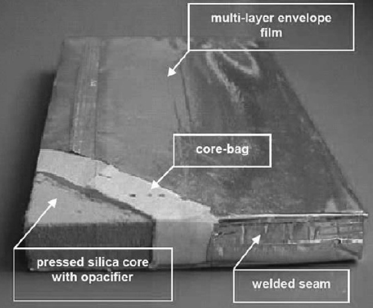

진공단열패널 Vacuum insulation panels (VIPs)

진공단열패널(VIP)의 전형적인 구조
진공단열패널(VIP)은 흄드실리카(fumed silical) 등 심재(core)가 외피로 감싸여진 형태입니다. 기밀성을 갖는 봉지재에 심재를 넣고 내부를 진공상태로 처리한 것이죠.
열전도율은 0.003~0.004 W/mK 로 기존 단열재 대비 5배~10배이상 우수하다고 할 수 있습니다.
장기간 사용할 시 열전도율이 수배이상 증가하는데 이는 수분 및 공기가 진공단열패널(VIP) 외피 및 내부 공극으로 침투하기 때문입니다.
초기단열성능은 매우 좋지만 고진공으로 장기간 유지한다는것이 쉽지 않아 사용수명을 20년이상으로 보는 것은 어렵다는 것이 공통된 의견입니다.
특히 못과 같은 것에 의해 진공단열패널(VIP) 외피에 천공이 생길 경우에도 열전도율이 0.02 W/mK 이상 증가할 수 있습니다. 이로 인해 진공단열패널(VIP)는 공사현장에서 절단되거나 단열성능의 손실 없이 구멍을 뚫을 수 없으며, 이런 이유가 진공단열패널(VIP)의 확산에 걸림돌이 되고 있습니다.
이런 단점에도 불구하고 전통적인 단열재에 비해 5~10배의 높은 단열성능으로 인해 패시브하우스나 제로 에너지/이산화탄소배출 건물(zero energy/emission building)의 단열성능을 충족시키는 단열재로 활용되고 있습니다.
안정된 단열성능으로
경시변화가 없고
치수변화 또한 최소화되는
EPS 준불연 단열재
DK보드
준불연 가등급 EPS 단열재 DK보드
건축용 / 외단열용 / 판넬용
문의 1855-2240